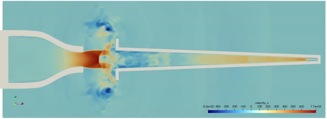
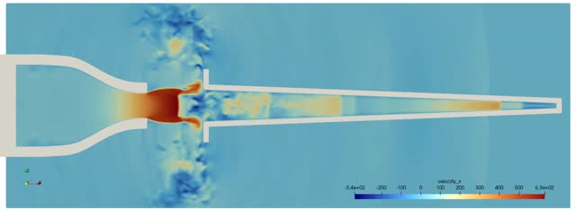
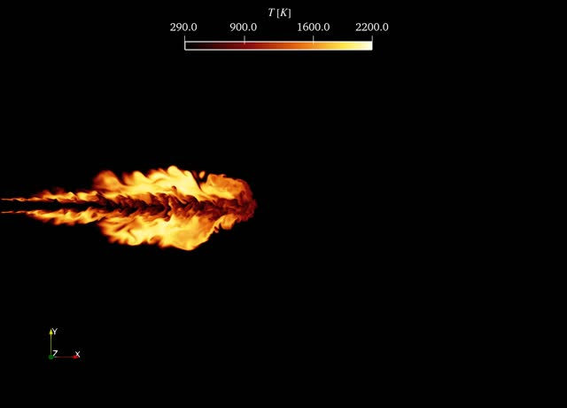
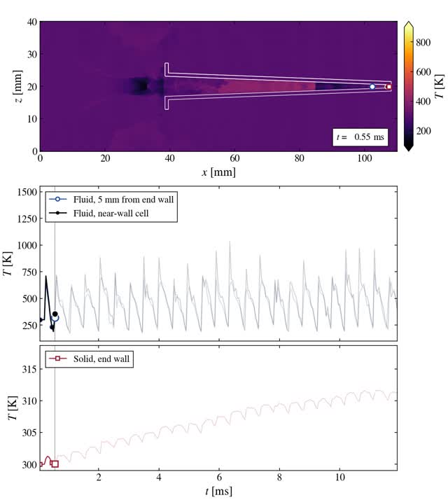
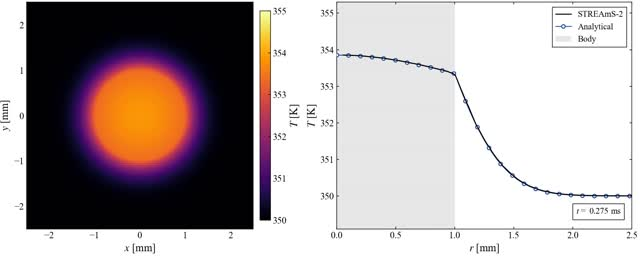
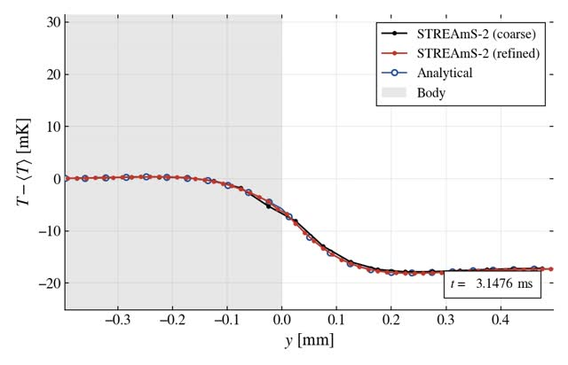

PhD Thesis - Supplementary videos
Edoardo Forti

NPR5 - JRM

NPR7 - JSM

Sandia flame A - temperature field

Cavity - temperature field

Sphere - temperature field profile (zoom)

Layer evolution comparison